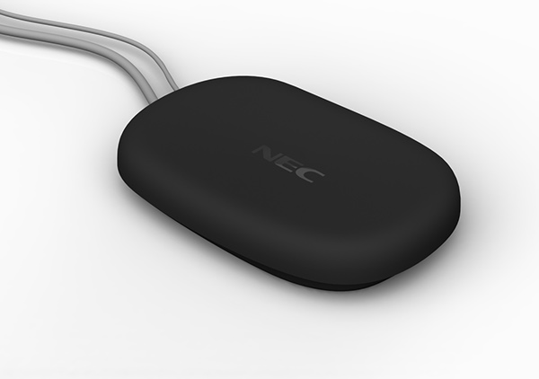
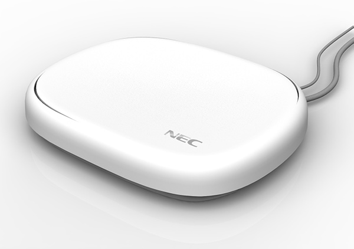

Domestic small cell for NEC finished in matt white
The SEA designed a new suite of services for the global operations teams at NEC and then the industrial design, prototyping and manufacturing liaison of NEC's current small cells.
Concept Sketch, Organic design exploration
NEC's press release read:-
The SEA Managing director, Paul Phillips, says
“Unlike most products of this type our design is a simple, organic, asymmetrical form. As well as creating a tactile and beautiful looking object, the design is practical, dealing with the potential mess of cables by obscuring the connections beneath the smooth bowl-shaped top cover.
This distinctive family of products have a shape, size and finish enabling the technology to be delivered whilst respecting both domestic and office interior environments.
The innovative outer casing helps to cool the internal components, with the overlapping top cover providing a hidden continuous vent around the unit. This complements the highly energy efficient power consumption (over 50% lower than EU regulations).
The design provides a flexible solution to enable clear operator branding to be applied in line with NEC’s customers’ marketing and brand requirements.
Small cells - mini mobile base stations that connect via broadband - are already more abundant than 3G masts and will become present in more and more places as mobile communications devices use more data. They will be the way network operators ensure they can provide services in the buildings where their customers are.”
“The design of our new small cells by The SEA gives us a modern and distinctive look and feel for the range of hardware to support our suite of propositions to our global customers. They have already given us great feedback and we look forward to seeing them successfully deployed in homes and businesses around the world.”(Anil Kohli, General Manager at NEC Europe)
The design also features:-
Simple plug and play operation;
Casing made from recycled plastic;
Single solution for all bands including GPS antenna.

Domestic small cell for NEC finished in matt black

Enterprise small cell for NEC finished in matt white
You can get in touch here